Exploring New Tech & AI
I've been fascinated by how electronics work for as long as I can remember. As a kid I took things apart just to see what was inside.
Lately that curiosity has pulled me into AI. I've been playing with tools that help me work faster and smarter, and it's been really cool to see what happens when old-school engineering meets modern AI.
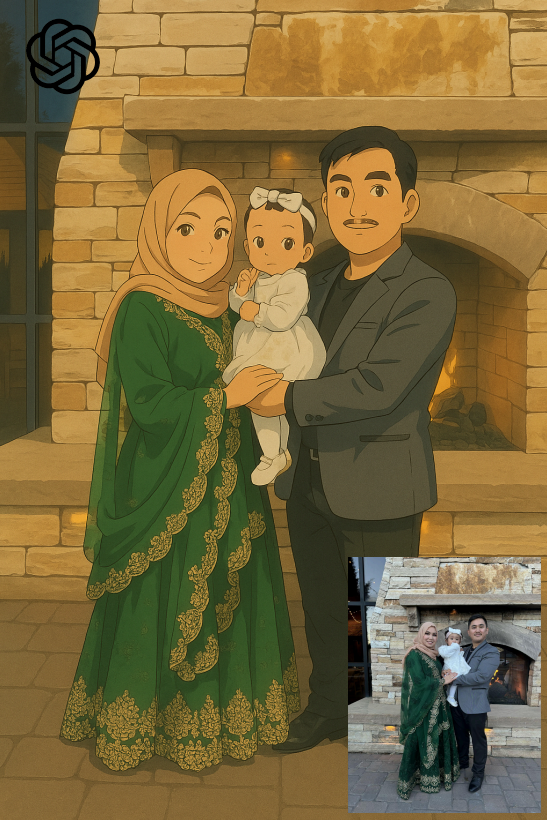
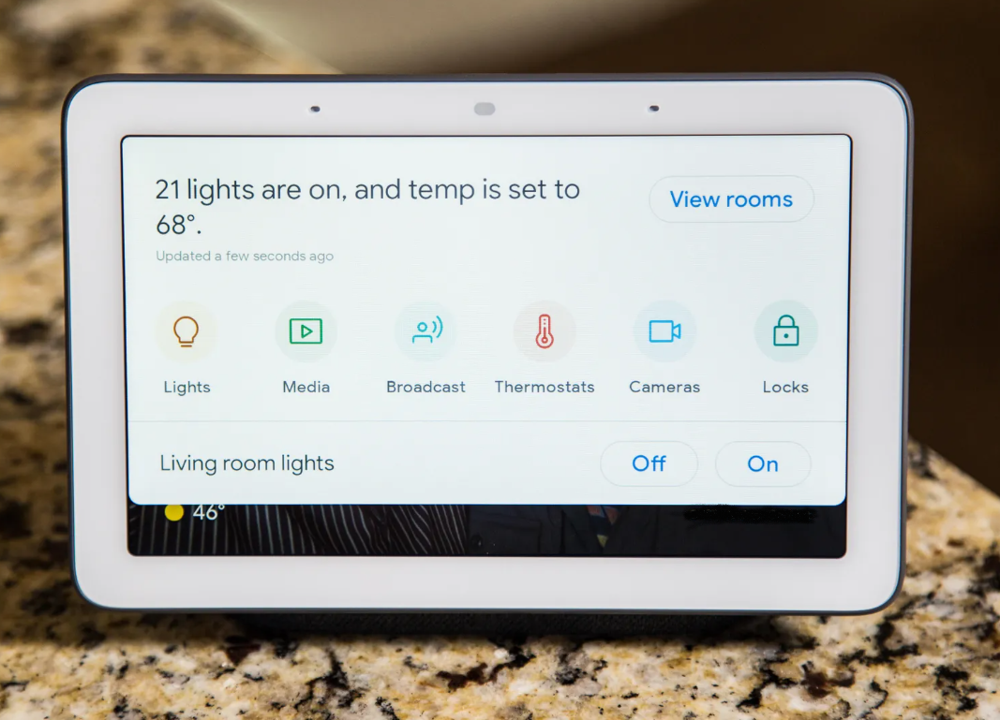
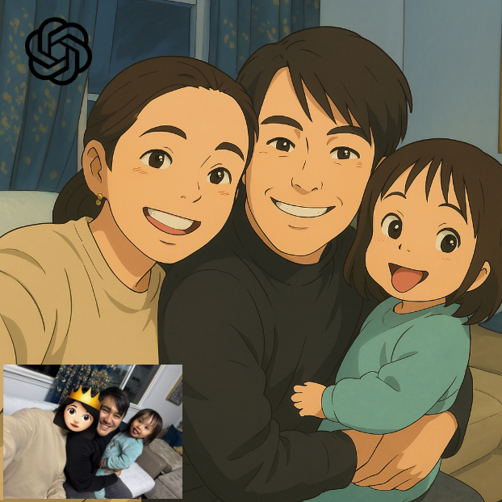
Building & Fixing
It started with building custom PCs, and I still do. I like squeezing the most performance out of a budget, whether it's for gaming, work or creative stuff.
I also fix just about anything that breaks around the house. Phone screens, batteries, housing swaps, even board-level soldering at my own soldering station. I like tracking down the root cause and finding a cheap way to bring it back to life.
My dad was a master mechanic, so I grew up with grease on my hands. I do my own oil changes, brakes, shocks and tires, and I've installed car audio too: head units, subs and amps. All of it taught me to be resourceful and pay attention to the details.
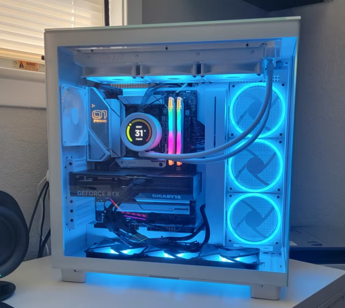
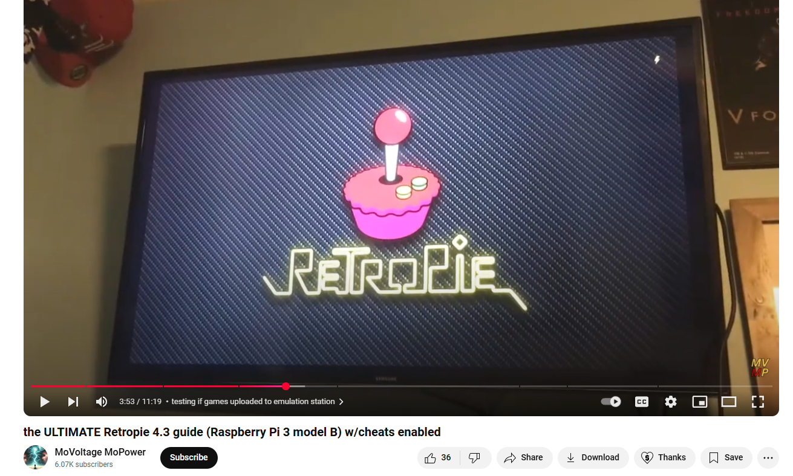


Making YouTube Videos
My channel started because I wanted to share simple fixes for common tech problems: electronics, computer issues and DIY repairs. These days it's a mix of how-to guides, PC hardware and software fixes, and help for engineering students.
It grew enough to join the YouTube Partner Program, so it actually pays for itself now. It's pretty rewarding to turn something I love into something that helps people.
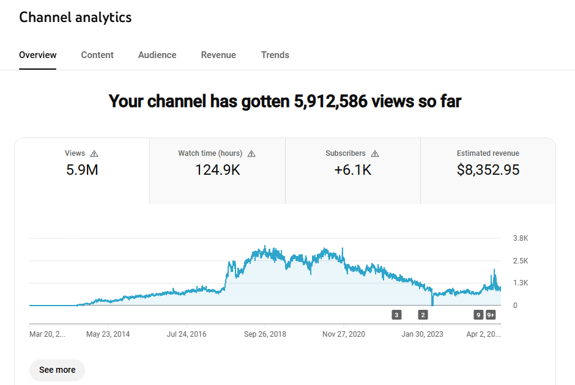
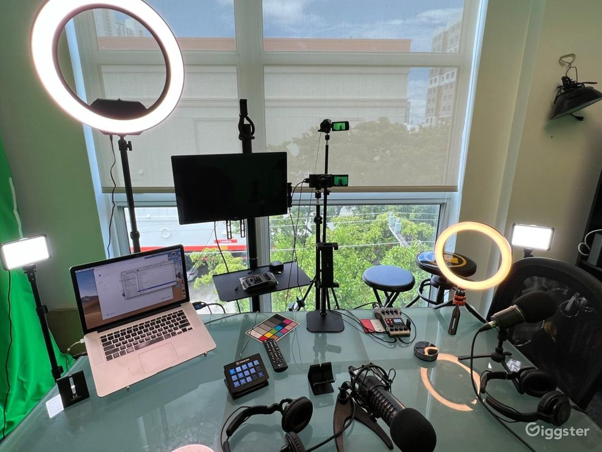
Camping
I've always liked being outside, but my first camping trip in Utah took it to another level. Getting away from screens and routines and just being out in nature recharges me like nothing else. I'll be doing this for the rest of my life.
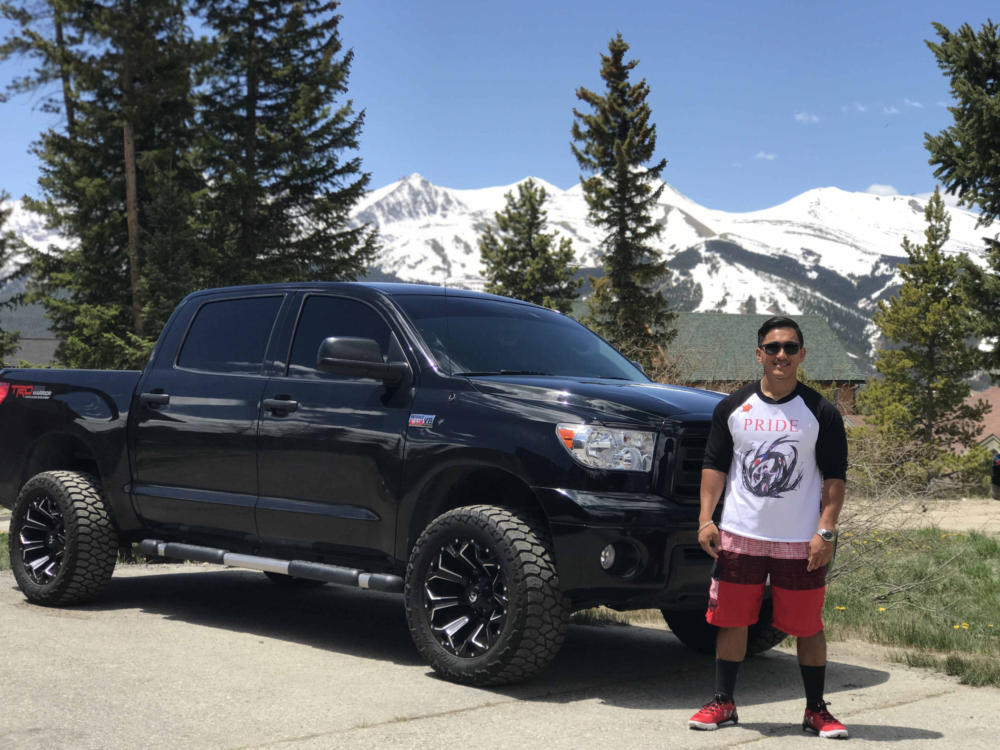
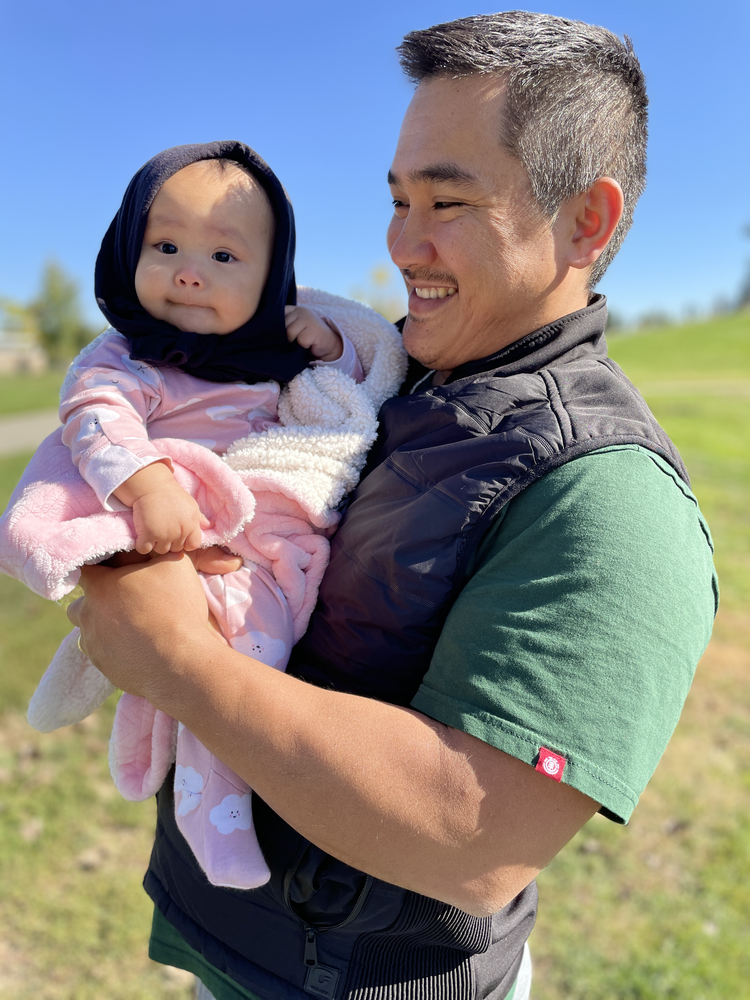
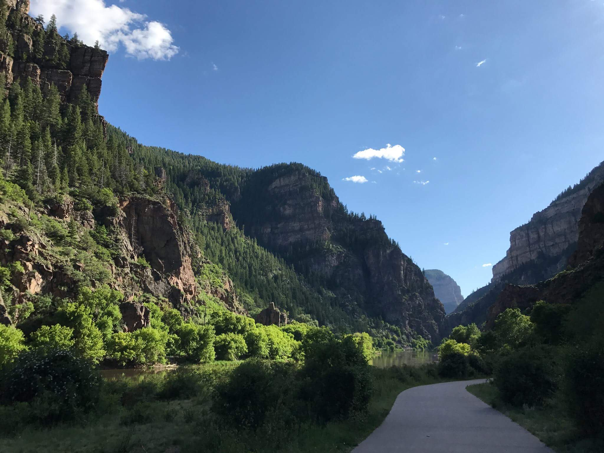

Custom Vinyl Stickers
I design custom vinyls and bumper stickers for friends and family, usually anime-inspired or just plain funny. It's my creative outlet, and I'm slowly building it up on Etsy too.
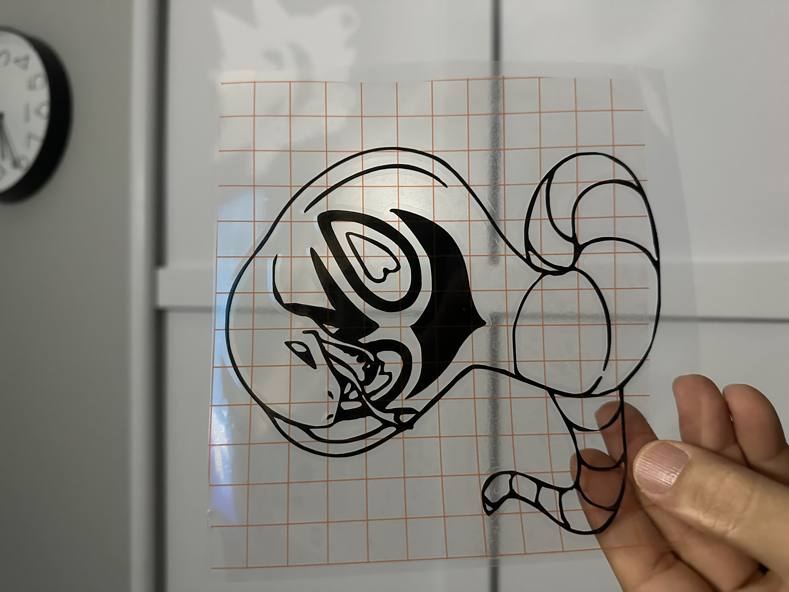
Old School RuneScape
I'm not a big gamer, but I've put enough hours into this one that it definitely counts as a hobby. I grew up playing OSRS, and grinding for rare drops and leveling skills taught me persistence and how to set goals and keep chipping away at them. That same mindset is what drives me as an engineer. I still log in now and then, partly for nostalgia and partly to remember where that drive came from.
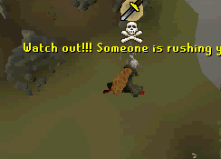

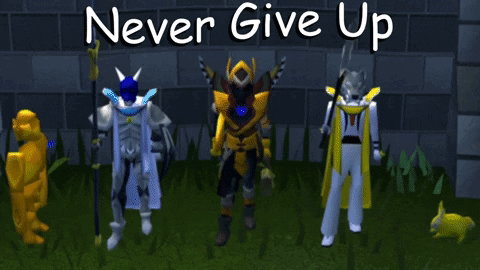